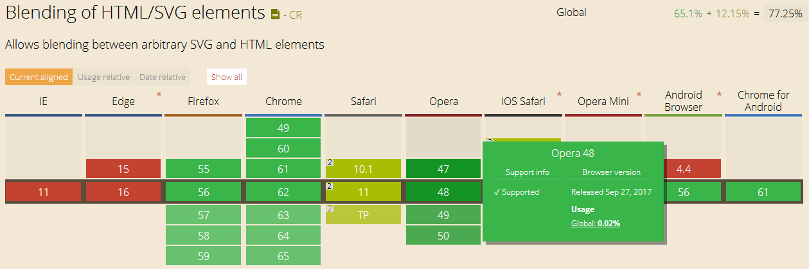
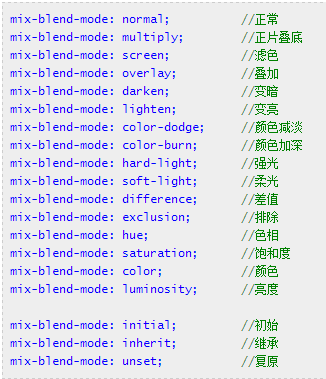

inner的mix-blend-mode: normal正常 multiply正片叠底 screen滤色 overlay叠加 darken变暗 lighten变亮 color-dodge颜色减淡 color-burn颜色加深 hard-light强光 soft-light柔光 difference差值 exclusion排除 hue色相 saturation饱和度 color颜色 luminosity亮度 initial初始 inherit继承 unset复位
